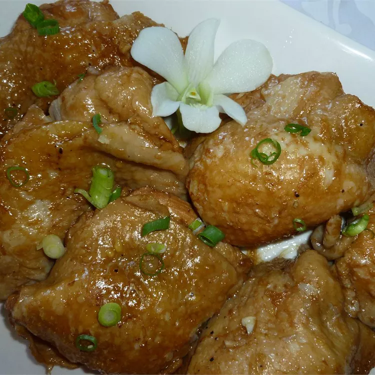

Adobo Chicken with Ginger

Description
Chicken adobo is considered the national dish of the Philippines. The combination of soy sauce, vinegar, garlic, ginger, and peppercorns is delicious and actually preserves the chicken! My mother taught me how to cook this using her variation on the original recipe. It's a delicious, cheap, and easy dish. Serve with hot, steamed Jasmine rice.
Ingredients
- 1 (3 pound) whole chicken, cut into 8 pieces
- 3/4 cup distilled white vinegar
- 1/2 cup soy sauce
- 2 tablespoons thinly sliced fresh ginger root
- 1/2 tablespoon black peppercorns
- 1 bulb garlic, peeled and crushed
- 2 bay leaves
Steps
- Combine chicken, vinegar, soy sauce, ginger, peppercorns, garlic, and bay leaves in a Dutch oven; bring to a boil over medium heat. Reduce heat, cover, and simmer for 30 minutes, basting chicken occasionally with the sauce.
- Remove the lid and continue to simmer until liquid has reduced by half, 5 to 10 minutes. An instant-read thermometer inserted near the bone should read 165 degrees F (74 degrees C).
- Transfer chicken to a serving plate. Strain liquid from the pot to remove bay leaves and other solids.
- Serve chicken hot and drizzle with strained sauce.